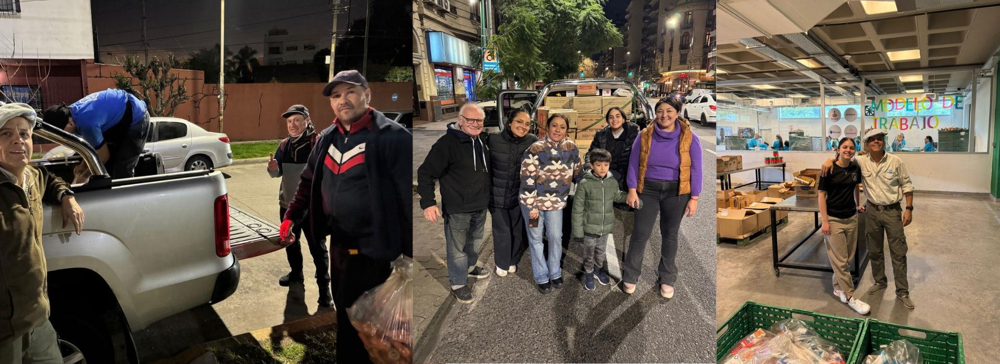
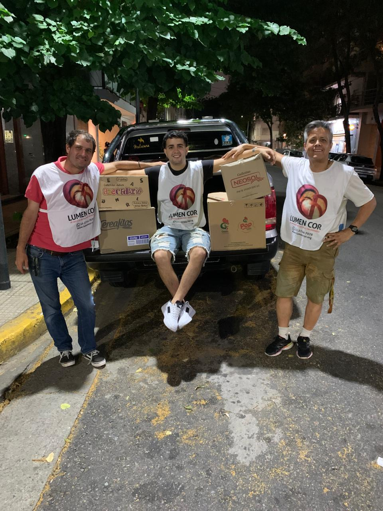
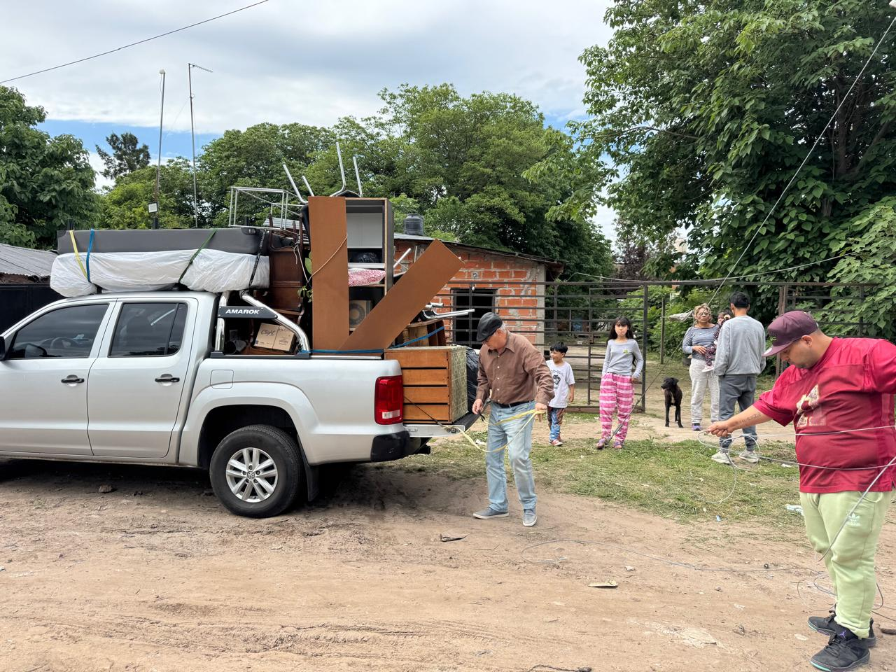
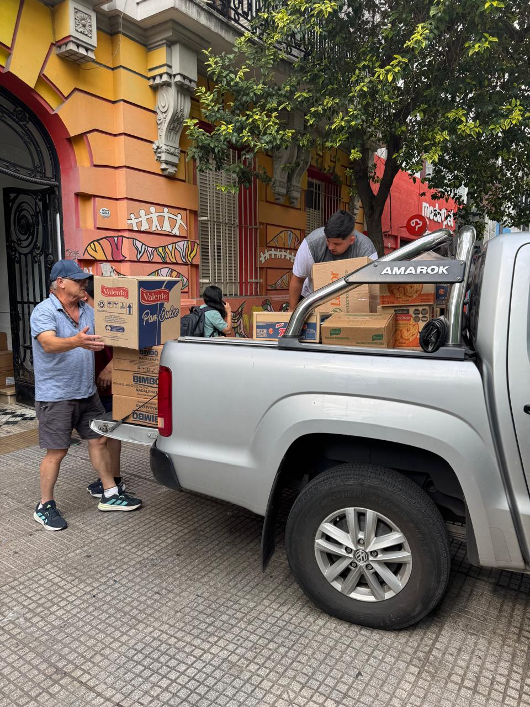

Gustavo “Tata” Luna Orellano, junto a su familia, está comprometido desde hace tiempo con diferentes actos de servicio. Uno de ellos es como voluntario de Lumen Cor (el corazón es la luz), entidad dedicada a tenderle una mano a personas en situación de calle y alta vulnerabilidad.
Lumen Cor trabaja por la reinserción social: brinda alimentos, contención, escucha y acompañamiento profesional (médicos, trabajadores sociales, acompañantes terapéuticos) los 365 días del año en espacios públicos de la Ciudad de Buenos Aires.
Por dicho compromiso, parte de lo recaudado por la venta de los libros El Cielo te Espera y Servicio de Altura se destina a estas obras de caridad.

Foto 1 · Voluntariado
Foto 2 · Entrega de alimentos
Foto 3 · Contención
Colocá caridad-1.jpg, caridad-2.jpg y caridad-3.jpg en la carpeta images/
Podés donar a través del proyecto de los libros o directamente a Lumen Cor.
Alias de Lumen Cor: LUMEN.COR · Más info en lumencor.org